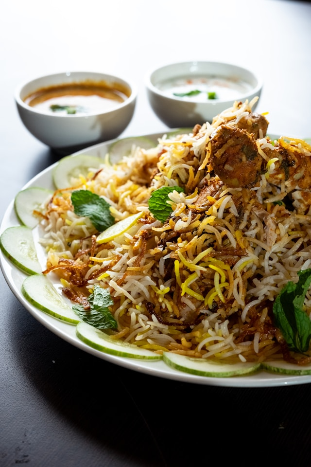

Biryani

Description
Biryani is a flavorful South Asian rice dish made by layering fragrant basmati rice with marinated meat or vegetables,
aromatic spices, and herbs. It is slow-cooked so that the rice absorbs the rich flavors, resulting in a delicious and satisfying meal.
Biryani is often served with raita (yogurt sauce), salad, or a spicy curry.
Ingredients
- 2 cups basmati rice
- 500 g chicken (or mutton)
- 1 cup plain yogurt
- 2 onions, thinly sliced
- 2 tomatoes, chopped
- 2 tablespoons ginger-garlic paste
- 2-3 green chilies
- ½ cup fresh coriander leaves, chopped
- ½ cup fresh mint leaves
- 1 teaspoon turmeric powder
- 1 teaspoon red chili powder
- 1 teaspoon garam masala
- 1 teaspoon cumin seeds
- 2 bay leaves
- 4 cloves
- 2 cardamom pods
- 1 cinnamon stick
- Salt to taste
- 4 tablespoons cooking oil or ghee
- Saffron soaked in warm milk (optional)
Steps to Make Biryani
- Wash the basmati rice and soak it in water for 30 minutes.
- Heat oil or ghee in a large pot and fry the sliced onions until golden brown. Set half of them aside for garnish.
- Add the whole spices (bay leaves, cloves, cardamom, cinnamon, and cumin seeds) and cook for about 30 seconds.
- Add the ginger-garlic paste and cook until fragrant.
- Add the chicken, yogurt, tomatoes, turmeric, red chili powder, garam masala, and salt. Cook until the chicken is tender.
- Stir in the chopped mint and coriander leaves.
- In another pot, boil the soaked rice until it is about 70% cooked, then drain.
- Layer the partially cooked rice over the chicken mixture.
- Sprinkle the reserved fried onions and saffron milk (if using) over the rice.
- Cover the pot tightly and cook on low heat for 20-25 minutes.
- Gently mix the layers before serving.
- Serve hot with raita, salad, or pickle.
Go Back to Home Page